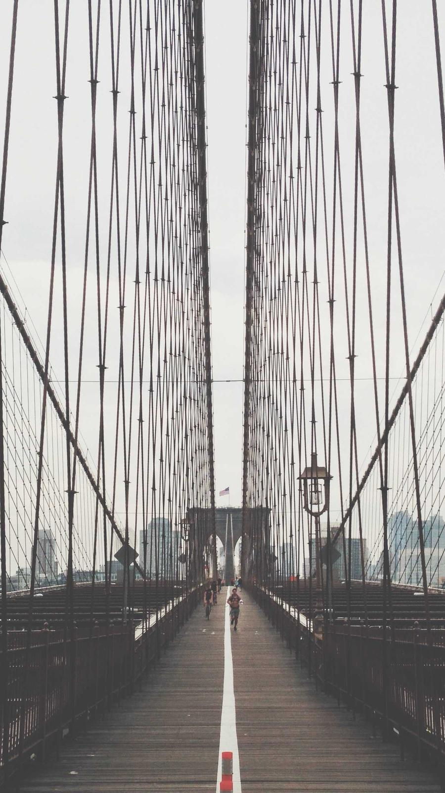

プロフィールに 3 つ目のタブ「ランキング」を足し、右下の追加 FAB から home と同じ地図を全面に敷いた作成フローへ遷移する。
固定（タブ行 44・ライト面・402×874・真上 pitch 0・暗い chrome・名前 / 円 / 白い光のリングの 3 要素）は動かさず、
A. 一覧の形と FAB を 3 案、B-1. サークル選択の確定のさせ方 を 3 案、B-2 以降 は推し案の手順を 1 本通しで置いた。
地図は MapLibre（openfreemap liberty）を真上で。ranking-map.js がサークルの数だけ円を描き、名前は 64px で「代表名 +N」に集約する（pan / ピンチ可）。


行 = 順位（Inter 700 16）+ 写真 44 / r12 + 店名（主役）+ 短い住所 + 自分の投稿サムネ。行タップで場所モードへ。
サークル名はタイトルの脇に teal の chip（既存 .tlp-chip）。ブロックの区切りは 8px の帯。
1 位 = 写真 176 / r16 にスクリム 1 枚、順位 34 w900。2〜3 位は A1 と同じ行（サムネは落として住所のみ）。「他 N 件を見る」は行の中で展開する。 FAB は スクロール中も残す（縮めない）。下スクロールで隠すと、長い一覧の末尾で入口を失う。
2はやし3渋谷横丁1WOMB2TK NIGHTCLUB 3ABOUT LIFE COFFEE
3ABOUT LIFE COFFEE 1ABOUT LIFE COFFEE BREWERS
1ABOUT LIFE COFFEE BREWERS 2キャットストリートの角
2キャットストリートの角 3Lattest
3Lattestタイル 108×144 / r12、順位は白い丸 24。1 本の高さが 220 で揃うので 3 本が一画面に入る。住所・サムネは出ない = 「どの店か」は写真と名前だけで判断させる。 帯の末尾に「他 N 件」タイル。FAB は ink の pill 52（ラベルがあるので colorful は不要）。
初期構図 = 現在地中心 zoom 13.6（2〜3 群）。home の active には白い光のリングが乗ったまま = 「今いるサークル」の目印。 タップで 500ms でその円へ寄り（半径を幅 72%）、寄り終わりで場所選びのシートが下から出る。確認は無い。
タップ = 選択（未確定）。リングが home の active からそのサークルへ 200ms で移り、他の円は塗り 8% / 線 40%、名前は 55% に落ちる。
下端シート（as-built の rgba(10,10,14,.9) r24）に 名前 / 説明 · 距離 / 自分の場所の数（主役）/ 総数 / 半径。CTA 56 で確定 → 寄る。
glass は × の 1 つ（シートは opaque）。
自分の場所が 0 のサークル — 選べる（既定）。0 を --text-3 に落とし、1 行で候補の出どころを書く。CTA は colorful を外して ghost。
帯のチップ = 「サークル」を外した名前 + 自分の場所の数（Inter 11）。タップで地図がそのサークルへ寄り、選択中は白地。地図の円タップでも同じ状態になる。 確定はヘッダー右「次へ」。glass 3 / 6（× / 次へ / 帯）。難点: 帯が地図の下端を隠し、片手では帯と円の往復が起きる。
確定で寄った地図（zoom ≈ 14.2、円を上側に寄せる）に場所ピン 36 / r11（既存流用）。自分が投稿した場所 = 先頭グループで全不透明、
他は .72。選ぶと scale 1.14 + バッジが件数（ink 地）→ 順位（白地）に変わる。行の左は選択 = 番号入りの白丸。
リンク貼り付けで足す行はシート末尾（次カード）。
S2 の「次へ」でシートが 452 → 560 に伸び、地図に 45% のスクリム。行 = 順位 18 / 写真 44 / 名前 + 住所 / 右端グリップ 44（icon_menu）。
持ち上げた行は面 8% + 影で浮く。末尾の「リンクを貼って足す」= 既存ダイアログを開き、解決した場所が末尾に付く。
入力 = WdTextField standart（地 --surface-input / 48 / pill）。上にサークル chip + 件数 + 並び順のサムネ 44。
保存 → 地図を dispose してタブへ戻る（全面フェード 240ms）。
保存中 — CTA のラベルをスピナー 20 に置き換え、× と入力を無効に。二重タップ防止。
失敗 — シートの上端に --surface-raised のスナック。入力内容は保持し「再試行」で同じ保存を投げる。
FAB → フローは 地図が下から現れる（白面が残ったまま 360ms --ease-out）、戻りは全面フェード。行き帰りで動きを変え、「作って戻った」と分かるようにする。
右下の ＋ から、サークルを選んで作りましょう。
見出し 15 w700 ink + 本文 12 ink-sub。中央寄せは画面全体が空のときだけ。投稿が 0 件（= 行ったお店が無い）のときは 2 行目を「投稿に Google マップのリンクを添えると、その店が候補になります」に差し替える。
タイトルは 2 行で clamp（16 / lh 1.4）。店名は 1 行省略。詳細未取得の場所は住所の後ろに「· 詳細は未取得」を足し、無いのか読めていないのかを区別する。

行タップは自分のときと同じく場所モードへ（他人のランキングから店を見に行ける）。ランキングが 0 本の他人 = 「ランキングはまだありません」の 1 行だけ（案内は出さない）。
- FAB の重み — colorful の Ø56。プロフィールに colorful は他に無く、home の投稿 FAB と同じ「作る」の意味を持たせられる。スクロール中も残す。他人のプロフィールでは出さない。
- サークル選択の確定 — B1-b の「選択 → 下端カード → CTA」。円は半径 500〜600m で重なるので、即決（B1-a）は誤タップの戻りが増える。カードに自分が投稿した場所の数を出せば、 0 のサークルを選んだときも「候補はサークルの場所から」と先に伝えられる。帯（B1-c）は逃げ道として良いが、下端を隠して地図が全面である意味が薄れる。
- 手順の数 — 4 → 3。場所のタップ順を順位にするので「順位を決める」は直す画面になり、迷わない人はそのまま次へ。タイトルは最後（並べ終わってから言葉が出る）。空欄なら仮タイトルで止めない。
- glass 予算 — 全画面で × の 1 つだけが glass（B1-c のみ 3）。シートは as-built の opaque（
rgba(10,10,14,.9)）で白文字 AA を面で担保。リストの行に glass は無い。